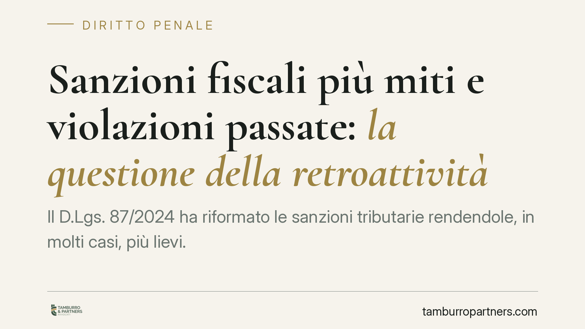

Sanzioni fiscali più miti e violazioni passate: la questione della retroattività
Il D.Lgs. 87/2024 ha riformato le sanzioni tributarie rendendole, in molti casi, più lievi. Ma ne ha limitato l'applicazione alle violazioni commesse dopo l'entrata in vigore del nuovo regime, escludendo il favor rei per il passato. La questione è controversa e divide i giudici di merito. Capire quale regime si applichi al proprio caso incide direttamente sull'importo contestato.

Il nodo: deroga alla lex mitior nelle sanzioni tributarie
Il D.Lgs. 87/2024, nell'ambito della revisione del sistema sanzionatorio tributario, ha ridotto le misure di molte sanzioni amministrative. La riforma contiene però una disposizione transitoria che ne circoscrive l'applicazione alle violazioni commesse a partire dall'entrata in vigore del nuovo regime, escludendo quindi l'estensione automatica del trattamento più favorevole alle condotte anteriori.
*Nota di verifica.* La decorrenza spesso indicata (1° settembre 2024) e la sentenza della Cassazione che avrebbe avallato la deroga alla retroattività vanno confermate puntualmente. Riferimenti a pronunce datate 2026 o a numeri di sentenza non riscontrabili non sono qui assunti come dato acquisito: trattiamo la questione come orientamento in attesa di consolidamento, da verificare prima di ogni decisione operativa.
Perché non è il penale: due regimi diversi
Occorre distinguere due piani che spesso vengono confusi.
Nel diritto penale vige il principio del *favor rei* sancito dall'art. 2 del codice penale: se la legge posteriore è più favorevole, si applica anche ai fatti pregressi (retroattività della legge più mite). Questo principio non ammette, in materia penale, deroghe discrezionali del legislatore.
Nel regime delle sanzioni amministrative tributarie la retroattività del trattamento più favorevole è invece prevista dall'art. 3 del D.Lgs. 472/1997, ma può essere derogata dalla legge successiva. È esattamente ciò che fa la disposizione transitoria del D.Lgs. 87/2024: individua uno spartiacque temporale e nega l'estensione retroattiva delle sanzioni ridotte.
Il profilo eurounitario
Qui entra in gioco la giurisprudenza della Corte di Giustizia UE. Secondo un consolidato orientamento, una sanzione formalmente amministrativa può avere natura sostanzialmente penale quando raggiunge un grado di afflittività elevato (criteri Engel). In tal caso trovano applicazione le garanzie proprie della materia penale.
Rileva in particolare l'art. 49, paragrafo 1, terza frase, della Carta dei diritti fondamentali dell'Unione europea (CDFUE), che impone l'applicazione della pena più lieve sopravvenuta. Se una sanzione tributaria fosse qualificata come sostanzialmente penale, la deroga alla retroattività favorevole potrebbe porsi in tensione con questa garanzia.
È su questo crinale che si gioca il margine difensivo: non ogni sanzione è afflittiva al punto da attrarre lo statuto penalistico, ma per quelle di maggiore gravità la questione è tutt'altro che teorica.
Implicazioni pratiche per il contribuente
Per chi ha una contestazione aperta relativa a violazioni anteriori al nuovo regime, la posta in gioco è concreta: applicando il regime vecchio, la sanzione resta più elevata; applicando quello nuovo, si riduce.
La giurisprudenza di merito non è uniforme. Alcune Corti di Giustizia Tributaria hanno seguito la deroga del legislatore; altre hanno valorizzato il profilo eurounitario per riconoscere il trattamento più mite anche al passato. L'esito dipende dalla natura della sanzione contestata e dalla sua afflittività.
Cosa fare in concreto
- Individua la data della violazione: è il discrimine che stabilisce quale regime sanzionatorio si applica in base alla disposizione transitoria.
- Calcola il differenziale sanzionatorio: confronta l'importo secondo il regime previgente e secondo quello riformato, per quantificare l'interesse concreto a sollevare la questione.
- Valuta la natura della sanzione: verifica se, per entità e funzione, possa essere qualificata come sostanzialmente penale secondo i criteri della CGUE.
- Conserva atti e notifiche: la tempistica delle contestazioni incide sui termini di impugnazione e sulla strategia.
- È opportuno affrontare ogni contestazione con un'analisi puntuale della norma applicabile al momento del fatto e dello stato della giurisprudenza, prima di definire la posizione.
Finché il quadro giurisprudenziale non si consolida, le decisioni vanno assunte caso per caso, misurando il rischio di soccombenza sul contenzioso rispetto all'eventuale definizione agevolata.
Disclaimer
Contributo informativo a cura di Tamburro & Partners Avvocati. Non costituisce parere legale.
Ogni condominio ha una storia a sé.
Se gestisci un'amministrazione e vuoi un confronto su una specifica questione condominiale, scrivi allo studio. Ti rispondiamo entro un giorno lavorativo.